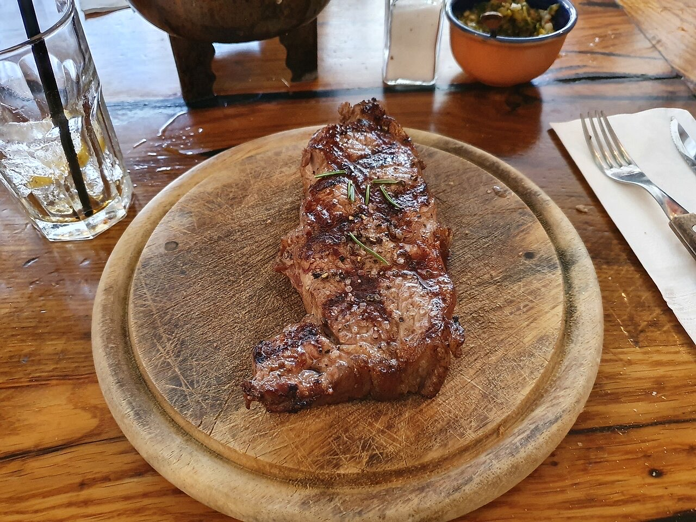
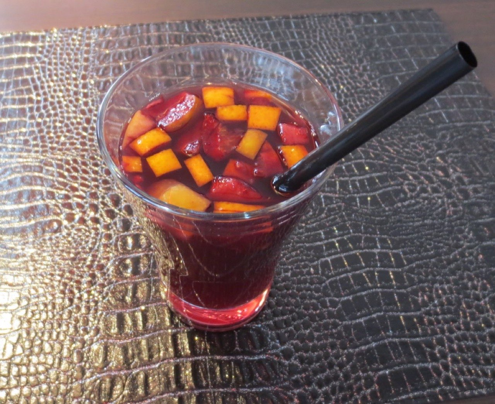

Fotografias ilustrativas — no site final usamos as vossas.
Bacalhau e bifes ao lado das tapas.
Ambiente animado, com música ao fim de semana à noite.
Peça da mesa por QR code e continue na conversa.
A Rota 2 Arcos serve tapas e pratos tradicionais na Rua Paio Galvão, no centro de Guimarães, com bacalhau, bifes e sangria. Ao fim de semana à noite, há música para animar a mesa.


Fotografias ilustrativas — no site final usamos as vossas.
Novo · Pedidos por QR code
Menos espera nas horas de ponta, menos enganos nos pedidos e a equipa livre para servir.
Pedido de reserva
Escolha o dia e a hora — o pedido chega por WhatsApp e confirmamos logo.
↑ Assim chegaria a mensagem ao vosso WhatsApp. (Nesta demonstração nada é enviado.)
Onde estamos
Proposta para Rota 2 Arcos
Esta página foi feita de propósito para Rota 2 Arcos por João Machado, programador web aqui de Guimarães. Inclui:
Eu trato do alojamento e da manutenção. Sem compromisso.